Caprice/ Impala

45 products
 1958 Chevy Impala RTX InstrumentsRTX-58C-IMP-X$1,765.00
1958 Chevy Impala RTX InstrumentsRTX-58C-IMP-X$1,765.00 1958 Chevy Impala HDX InstrumentsHDX-58C-IMP$1,625.00
1958 Chevy Impala HDX InstrumentsHDX-58C-IMP$1,625.00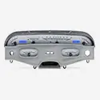
1958 Chevy Impala VHX InstrumentsVHX-58C-IMP$995.00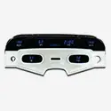
1958 Chevy Impala Digital Instrument SystemVFD3-58C-IMP$865.00 1959-60 Chevy Impala/ El Camino RTX InstrumentsRTX-59C-IMP-X$1,765.00
1959-60 Chevy Impala/ El Camino RTX InstrumentsRTX-59C-IMP-X$1,765.00 1959-60 Chevy Impala/ El Camino HDX InstrumentsHDX-59C-IMP$1,625.00
1959-60 Chevy Impala/ El Camino HDX InstrumentsHDX-59C-IMP$1,625.00 1959-60 Chevy Impala/ El Camino VHX InstrumentsVHX-59C-IMP$995.00
1959-60 Chevy Impala/ El Camino VHX InstrumentsVHX-59C-IMP$995.00 1959-60 Chevy Impala/ El Camino Digital Instrument SystemVFD3-59C-IMP$815.00
1959-60 Chevy Impala/ El Camino Digital Instrument SystemVFD3-59C-IMP$815.00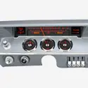
1961-62 Chevy Impala RTX InstrumentsRTX-61C-IMP-X$1,765.00 1961-62 Chevy Impala HDX InstrumentsHDX-61C-IMP$1,625.00
1961-62 Chevy Impala HDX InstrumentsHDX-61C-IMP$1,625.00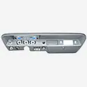
1961-62 Chevy Impala VHX InstrumentsVHX-61C-IMP$995.00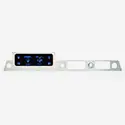
1961-62 Chevy Impala Digital Instrument SystemVFD3-61C-IMP$865.00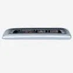
1963-64 Chevy Impala RTX InstrumentsRTX-63C-IMP-X, RTX-64C-IMP-X$1,765.00 1963-64 Chevy Impala HDX InstrumentsHDX-63C-IMP$1,625.00
1963-64 Chevy Impala HDX InstrumentsHDX-63C-IMP$1,625.00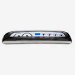
1963-64 Chevy Impala VHX InstrumentsVHX-63C-IMP$995.00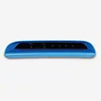
1963-64 Chevy Impala Digital Instrument SystemVFD3-63C-IMP, VFD3-63C-IMP-CLK$865.00 1965 Chevy Caprice/ Impala RTX InstrumentsRTX-65C-IMP-X$1,765.00
1965 Chevy Caprice/ Impala RTX InstrumentsRTX-65C-IMP-X$1,765.00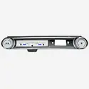
1965 Chevy Caprice/ Impala VHX InstrumentsVHX-65C-IMP$995.00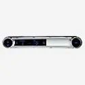
1965 Chevy Caprice/ Impala Digital Instrument SystemVFD3-65C-IMP, VFD3-65C-IMP-CLK$865.00 1966 Chevy Caprice/Impala RTX InstrumentsRTX-66C-IMP-X$1,765.00
1966 Chevy Caprice/Impala RTX InstrumentsRTX-66C-IMP-X$1,765.00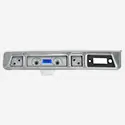
1966 Chevy Caprice/ Impala VHX InstrumentsVHX-66C-IMP$995.00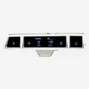
1966 Chevy Caprice/Impala Digital Instrument SystemVFD3-66C-IMP$885.00 1967 Chevy Caprice/Impala RTX InstrumentsRTX-67C-IMP-X$1,765.00
1967 Chevy Caprice/Impala RTX InstrumentsRTX-67C-IMP-X$1,765.00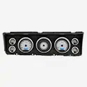
1967 Chevy Caprice/ Impala VHX InstrumentsVHX-67C-IMP$995.00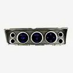
1967 Chevy Caprice/Impala Digital Instrument SystemVFD3-67C-IMP$885.00 1968 Chevy Caprice/Impala RTX InstrumentsRTX-68C-IMP-X$1,765.00
1968 Chevy Caprice/Impala RTX InstrumentsRTX-68C-IMP-X$1,765.00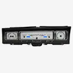
1968 Chevy Caprice/ Impala VHX InstrumentsVHX-68C-IMP$995.00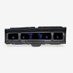
1968 Chevy Caprice/Impala Digital Instrument SystemVFD3-68C-IMP$885.00 1969-70 Chevy Caprice/ Impala RTX InstrumentsRTX-69C-IMP-X$1,765.00
1969-70 Chevy Caprice/ Impala RTX InstrumentsRTX-69C-IMP-X$1,765.00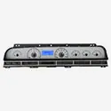
1969-70 Chevy Caprice/Impala VHX InstrumentsVHX-69C-IMP$995.00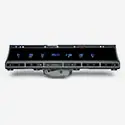
1969-70 Chevy Caprice/Impala Digital Instrument SystemVFD3X-69C-IMP$895.00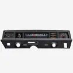
1971-76 Chevy Caprice/ Impala RTX InstrumentsRTX-71C-CAP-X$1,765.00 1971-76 Chevy Caprice/ Impala HDX InstrumentsHDX-71C-CAP$1,625.00
1971-76 Chevy Caprice/ Impala HDX InstrumentsHDX-71C-CAP$1,625.00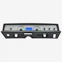
1971-76 Chevy Caprice/ Impala VHX InstrumentsVHX-71C-CAP$995.00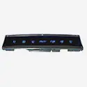
1971-76 Chevy Caprice/ Impala Digital Instrument SystemVFD3X-71C-IMP$895.00 1977-90 Chevy Caprice/ Impala & 1984-86 Pontiac Parisienne RTX InstrumentsRTX-77C-CAP-X$1,765.00
1977-90 Chevy Caprice/ Impala & 1984-86 Pontiac Parisienne RTX InstrumentsRTX-77C-CAP-X$1,765.00 1977-90 Chevy Caprice/ Impala & 1984-86 Pontiac Parisienne HDX InstrumentsHDX-77C-CAP$1,625.00
1977-90 Chevy Caprice/ Impala & 1984-86 Pontiac Parisienne HDX InstrumentsHDX-77C-CAP$1,625.00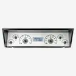
1977-90 Chevy Caprice/Impala & 1984-86 Pontiac Parisienne VHX InstrumentsVHX-77C-CAP$995.00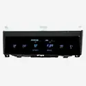
1977-90 Chevy Caprice/ Impala Digital Instrument SystemVFD3-77C-CAP$885.00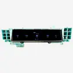
1991-93 Chevy Caprice with Factory Analog GaugesVFD3-91C-CAP-A$885.00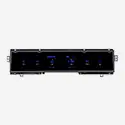
1991-93 Chevy Caprice w/ OEM Digital Speedo, 91-93 Buick Roadmaster, 91-92 Olds Custom CruiserVFD3-91C-CAP-D$885.00 1994-96 Chevy Caprice/ Impala SS HDX InstrumentsHDX-94C-CAP$1,625.00
1994-96 Chevy Caprice/ Impala SS HDX InstrumentsHDX-94C-CAP$1,625.00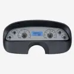
1994-96 Chevy Caprice/ Impala SS VHX InstrumentsVHX-94C-CAP$995.00 1994-95 Chevy Impala SS Digital Instrument SystemVFD3-94C-CAP$885.00
1994-95 Chevy Impala SS Digital Instrument SystemVFD3-94C-CAP$885.00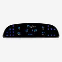
1994-96 Chevy Caprice Digital Instrument SystemVFD3-94C-CAP$885.00
Not sure what fits?
Talk to a tech in Sioux Falls, Monday to Friday, 8am to 5pm Central.